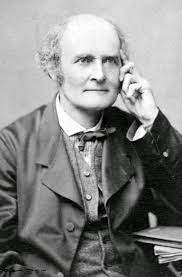

Arthur Cayley was a profile British mathematician who worked mostly on algebra. He helped found the modern British school of pure mathematics. As a child, Cayley enjoyed solving complex maths problems for amusement.